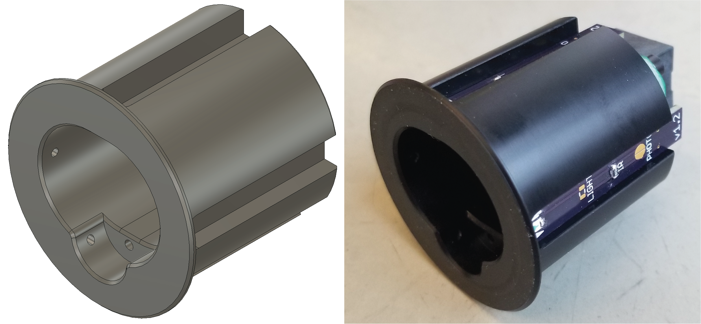

Nosepoke Documentation¶
{kind=link}
This is the documentation for building a nosepoke for rat behavioral experiments.
This project was developed by Andy Lustig in the Karpova Lab at Janelia Research Campus
Highlights¶
- Useful interface with rat
- Controllable overhead LED for lighting up the inside of the nosepoke
- Two infrared beam breaks for detecting nose insertion and licking
- Deep opening for the rat to comfortably insert its nose
- Shelf for liquid reward to accumulate instead of dripping onto floor
- Robust and Manufacturable
- Designed to be machined out of hard plastic by a typical machine shop. Less durable version can be 3D printed.
- Zero exposed wires, all connections are integrated in the PCB or made with solder joints.
- No connectors or screw terimal to become loose
- No wires to be chewed through
- Electronics can be easily scaled to larger quantities
- Single sided PCB with surface mount components is ideal for a PCB assembly service or manual assembly with a toaster oven/hot plate/heat gun.
- Easy to install and maintain
- Designed to be press fit into 1.5” hole
- Backside push-to-connect tube fitting for easy connection/disconnection when replacing liquid reward tubing.
- Open Source
- All files are available on GitHub and can be modified to meet custom needs.
RJ45 Pinout¶
| RJ45 Pin | Description | Direction |
|---|---|---|
| 1 | Nose Beam Break | Output |
| 2 | ||
| 3 | White LED | Input |
| 4 | ||
| 5 | Ground | |
| 6 | ||
| 7 | 3.3 Volts | |
| 8 | Lick Beam Break | Output |